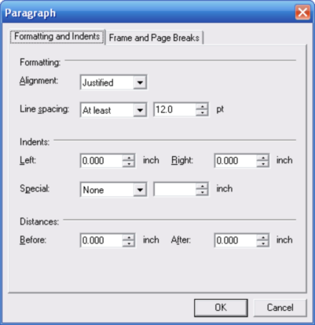
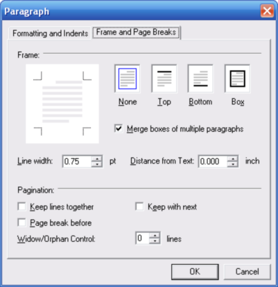

Icon: Keyboard shortcut: Alt, O, P
Opens the Paragraph dialog, where you can set the line spacing, alignment, and other properties of the paragraph where the cursor is currently located.

Alignment: Determines whether text is aligned left, right or center, or justified to fill the available width.
Line spacing: Sets the distance between lines as text wraps down automatically.
Indents, Left, Right: Sets the amount of indentation from the left and right margins, in inches.
Indents, Special: Lets you specify the indentation for the first line of the paragraph, or for a hanging indent, where the first element hangs, or is offset to the left, of the lines of text that wrap below the first line.
Distances: Specifies the distance, in inches, between this paragraph and the text above and below this paragraph.

Frame
None, Top, Bottom, Box: Determines the properties of any outline that you want to appear around all or part of the paragraph.
Merge boxes of multiple paragraphs: If you selected multiple paragraphs before opening this dialog, determines whether the paragraphs are considered as one when drawing the outline.
Line width: Specifies the width of the paragraph frame line, in points (1 point = 1 / 72 inch).
Distance from Text: Specifies the distance, in inches, between the frame outline and the text of the paragraph.
Pagination
Keep lines together: Keeps all of the lines in the currently selected paragraph together on the same page, if possible.
Page break before: Sets the current paragraph to always appear at the top of the page, regardless of the text that comes before it.
Keep with next: Makes this paragraph move to the next page if necessary in order to keep it on the same page as the paragraph that follows it.
Widow/Orphan Control: Gets or sets the number of lines for widow/orphan control of the current paragraph. When a paragraph appears near the bottom of a page, widow/orphan control determines how many lines must not be separated from the rest of the paragraph. For example, if this property is set to two, there must be at least three lines of the paragraph at the bottom of the previous page and at least three lines at the top of the next page. Otherwise, the complete paragraph is displayed on the next page. If this property is set to zero, widow/orphan control is disabled. The property sets the value for all paragraphs currently selected.